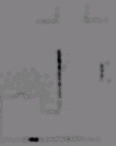

Dokumentation zum Pfadplanungs-Verhalten map_go_destination
Das Verhalten operiert auf
der erstellten Karte und lässt den bot zu einer bestimmten Zielposition
innerhalb der Map fahren unter Umgehung der
vorhandenen Hindernisse. Zum Startzeitpunkt des Verhaltens wird der Weg bis zum
Ziel laut der map und den bisher bekannten
Hindernissen geplant und die so gefundenen Map-Punktkoordinaten
wieder in der map abgelegt und bis zum Erreichen des
Ziels punktweise angefahren.
Doch wie kann nun ein
Zielpunkt definiert werden ? Dazu wurde ein weiteres
kurzes Verhalten implementiert, welches bei einem Tastendruck (Pos
Save F3)
die aktuelle Map-Botposition als nunmehr globales
Ziel festlegt. Solange keine andere Koordinate mittels diesem
Tastendruck als Ziel festgelegt wird, solange gilt die Startposition als
zu erreichendes Ziel. Zum Startzeitpunkt passiert also rein gar nichts, da der
bot ja seine Zielposition schon erreicht hat. Den bot kann man nun die Gegend
erforschen lassen oder zu einer anderen Stelle verfahren. Nach Start des
Pfadfolge-Verhaltens (Goto F4) fährt der Bot nunmehr zu
seinem vorher festgelegten Ziel (oder Startpunkt) unter Umgehung der
Hindernisse.
Bei völlig unerforschtem
Gebiet wird die Karte online erstellt und der Weg zum Ziel an den Hindernissen
vorbei berechnet. Wird der ermittelte Zwischenzielpunkt nicht erreichbar oder
ermittelbar (wg. Hindernisaktualisierung; zu nah am Hindernis) so erfolgt eine
neue Pfadplanung.
Fahrverhalten (bot_gotoxy_behaviour_map)
Die Denkweise des vorliegenden Verhaltenssystems basiert darauf, ein Rahmenverhalten zu schaffen, welches den bot von seinem Standort zu einem Zielpunkt xy fahren lässt. Die Routinen basieren alle auf den vorliegenden Integer-Mapkoordinaten, womit sich speicher- und rechenzeitsparend operieren lässt. Eingeleitet wird die Fahrroutine durch den Versuch, ohne Pfadplanung direkt in Richtung Ziel zu fahren. Erst wenn dies nicht möglich ist wird versucht, einen möglichen Weg zum Ziel zu finden. Durch Umschaltung zum Pfadplanungsverhalten wird der Weg zum Ziel versucht zu ermitteln und der nächste anzufahrende Zwischenzielpunkt zurückgegeben. Dieser Punkt wird angefahren und nach dem Erreichen der Folgepunkt auf dem ermittelten Pfad bestimmt.
Auf seinem Weg zum Ziel können verschiedene Notfälle (Notfall-Registrierung) auftreten. Dazu gibt es die Parallelverhalten zur Abgrunderkennung (bereits vorhanden mit bot_avoid_border_behaviour) und Rückwärtsfahren mit Kennzeichnung des Loches in der Map (update_map_hole) sowie das Verhalten zum Erkennen eines möglichen Hängenbleibens (bot_check_hang_on_behaviour). Die beiden Parallelverhalten setzen bei Auftreten eines der Ereignisse eine Variable, welches vom Fahrverhalten eine Loch-/Hinderniskennzeichnung in der Map mit Pfad-Neuplanung zur Folge hat.
Pfadplanung mittels Potenzialfeldmethode (bot_path_bestfirst_behaviour)
Die Pfadplanung dient zur Ermittlung des Wegpfades vom Bot-Standort zu einem vorher definierten Ziel. Dazu gibt es diverse Algorithmen, welche mehr oder weniger speicher- und rechenintensiv aufwendig sind. Hinzu kommen weiter stark einschränkende Bedingungen (möglichst wenig Speicherverbrauch, keine dynamischen Listen,...), weshalb hier nicht unbedingt die bestmögliche Lösung realisiert werden konnte. Die Pfadplanung dient eigentlich „nur“ dazu, dem Fahrverhalten einen anzufahrenden Zielpunkt zu liefern. Das Verhalten selbst kann relativ einfach durch ein auf anderem Algorithmus basierender Logik ersetzt werden.
Implementiert wurde das hier
vorliegende Pfadplanungsverhalten nach der Potenzialfeldmethode, d.h. grundsätzlich
wird zum Ziel hin das Potenzial kleiner und umso näher ein Hindernis ist, umso
größer ist dort das Potenzial. Aus der Summe der anziehenden und abstossenden Potenziale wird der nächste anzufahrende Punkt
ermittelt und derjenige genommen, dessen Pot. am geringsten ist. Die in der
Literatur beschriebenen dynamischen Listen mit Verwerfen eines Teilwegbaumes in
lok. Min. konnten hier auf Grund der Einschränkungen
(bisher) nicht realisiert werden. Stattdessen wurde versucht, mit dem schon
vorhandenen Map-Speicher den Wegpfad festzuhalten.
Das folgende Bild verdeutlicht die anzufahrenden und in der Map
gekennzeichneten Pfadpunkte:
|
|
 |

Der relativ geringe Aufwand ist gleichzeitig der Nachteil. Auf Grund der anziehenden (Abstand zum Ziel) und abstoßenden Potenziale (Mapwerte der Hinderniswahrscheinlichkeit durch bot_scan_onthefly_behaviour/ bot_scan_behaviour) kann es zu einem lokalen Minimum führen. So ist es in dem Bild oben kaum möglich, aus der oberen linken Ecke rauszukommen. Hier ist noch viel Spielraum für Verbesserungen/ Erweiterungen vorhanden.
Parallel zum Fahrverhalten wird vom Abgrundverhalten (bot_avoid_border_behaviour) ständig geprüft, ob sich der Bot über einen Abgrund befindet. Wenn ein solcher Notfall auftritt, kann mit der hier verwendeten Logik ein beliebiges anderes Verhalten darüber benachrichtigt werden. Von dem Verhalten selbst muß hierzu nur eine Routine bereitgestellt werden, die diesen Notfall dann entsprechend behandeln kann. Diese Routine muß dann via register_emergency_proc registriert werden. Diese Routinen werden in einem array abgelegt und beim Auftreten des Notfalls der Reihe nach aufgerufen.
In unserem Fall werden 2 Routinen (border_in_map_handler/ border_mapgo_handler) registriert, welche im Falle des Abgrundes ein rückwärts fahren (Umschaltung zum Verhalten bot_drive_distance) und die Kennzeichnung der Loch-Mapkoordinaten (update_map_hole) mit neuer Pfadplanung zur Folge haben.
Hängenbleiben (bot_check_hang_on_behaviour)
Das Verhalten vergleicht die Maus- und Encoderwerte miteinander um ein Hängenbleiben des bots, wie hier beschrieben, zu erkennen (funktioniert also nur bei aktivierter Maus). Mittels einer Syncvar wird das Fahrverhalten über das Ereignis informiert (hätte auch wie oben mit Registrierung realisiert werden können), was ein Rückwärtsfahren und Hindernis-Voraus Kennzeichnung mit neuer Pfadplanung zur Folge hat.
Es ist solange der Ausgangspunkt des bots als Ziel festgelegt, bis die Taste F3 betätigt wird. Dann gilt die aktuelle Bot-Position als zu erreichendes Ziel, welches nach F4 angefahren wird. Im Screen ändert sich entsprechend die oberste Zeile. Die hierzu aufgerufene Routine bot_set_destination setzt bei Parameter 0,0 die aktuelle Botposition als Ziel oder setzt bei Map-Werteübergabe diese als Ziel.
Auf
dem Screen werden im oberen Teil die Mapkoordinaten
des zuletzt gespeicherten Ziels (oberste Zeile) ausgegeben sowie darunter die
beim Umherfahren sich ständig ändernde Bot-Map-Koordinate.

Im
unteren Teil werden kurz die Funktionen aufgeführt bei Aufruf einer bestimmten
Funktionstaste:
Print F1
-> im Simulator wird Karte ausgegeben als Greymap
Pos
Save F3 -> aktuelle Botposition
gilt als nunmehr global zu erreichende Zielposition
Goto F4
-> globale Zielposition wird angefahren
Scan F7 -> bot dreht sich im Kreis mit Scan der Umgebung
Um
auf der vorhandenen Map operieren zu können, wurde
der Wertebereich der online-Aktualisierung
eingeschränkt, so dass der höchste Wert +127 für die Markierung der Pfadpunkte
benutzt werden kann ohne durch die ständige Freiaktualisierung überschrieben zu
werden. Und die "nur" 2cm für das Hindernisumfeld (MAP_RADIUS)habe
ich auch erhöhen müssen, damit Abstand gehalten wird.
Durch die oftmalige
Benutzung des Not-Aus Verhaltens, werden ja alle Verhalten bis Prio 200 deaktiviert, so auch das
on_the_fly-Verhalten, welches grundlegend für diese Map-Routinen ist. Die Prio wurde
deswegen auf einen Wert > 200 angehoben, um die Aktivierung zu erhalten.
Entscheidend ist hier auch
die Wahl der Auflösung. Die besten Ergebnisse habe ich bei MCU-Auflösung
gemacht, da damit die Zwischenzielpunkte in nicht zu geringem Abstand generiert
werden. Bei dieser Auflösung wird direkt mit den jeweiligen Nachbar-Mapkoordinaten
operiert. Bei hoher Auflösung wird mittels Umkreis um den zu untersuchenden
Punkt die nächste anzufahrende Map-Koordinate
ermittelt. Hierbei ist ebenfalls wichtig, dass das zu aktualisierende Umfeld
eines Hindernisses nicht zu klein gewählt wird (Define
MAP_RADIUS), damit Abstand zum Hindernis gehalten wird. Auf die Ergebnisliste
wird keine weitere Routine angewandt, so dass bei höheren Auflösungen relativ
viele Zwischenzielpunkte erzeugt werden. Hier könnte sicher noch eine
Datenreduktion erfolgen.